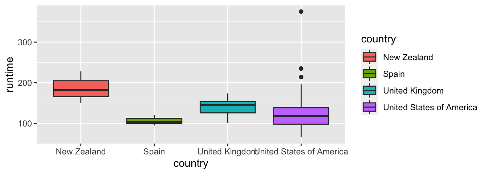
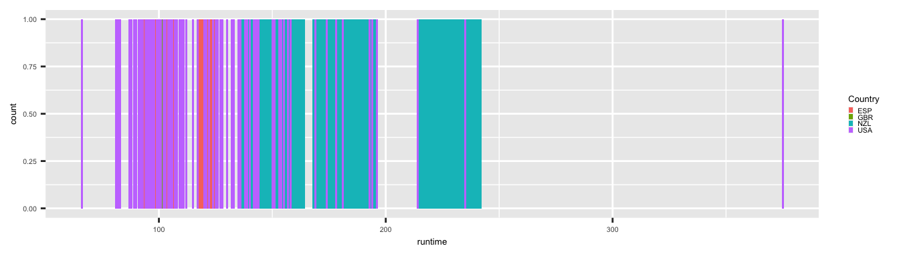
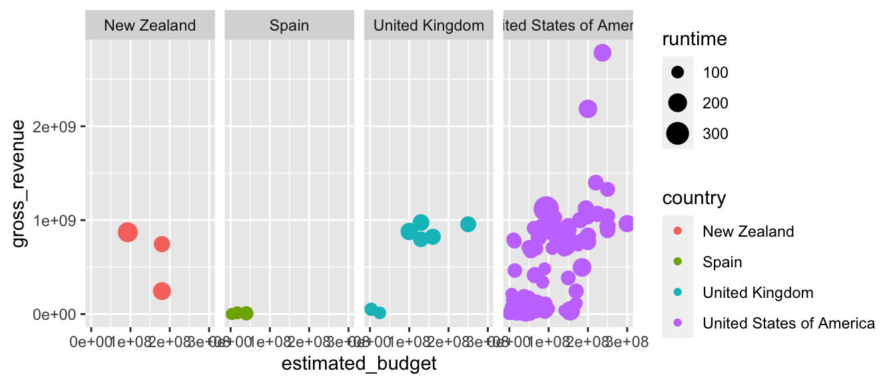

5 Graphiques
L’analyse de données passe souvent par une phase de visualisation. R propose différentes méthodes pour créer des graphiques. Le package {graphics}, qui est installé d’office et chargé par défaut au démarrage de R, contient de nombreuses fonctions pour réaliser des graphiques. Cependant, nous allons plutôt présenter les bases de la confection de graphiques à partir du package {ggplot2}. Comme ce document a vocation à être une introduction, seule une infime partie des possibilités offertes par {ggplot2} est abordée. Le lecteur ou la lectrice intéressé•e est invité•e à consulter des excellents ouvrages ayant été publiés (Chang 2013, Wickham_2009_ggplot2).
Les graphiques avec {ggplot2} sont crées par couches (layers), avec la première constituée des données brutes, puis les suivantes d’annotations, d’informations statistiques. {ggplot2} s’appuie sur une grammaire. L’apprentissage de cette grammaire nécessite un peu de temps, mais permet de créer des graphiques intelligibles. La grammaire graphique crée une carte, un plan (mapping) pour passer des données aux attributs esthétiques des objets géométriques (comme la couleur, la forme, ou la taille des points, lignes, etc.). Elle permet également d’appliquer des transformations aux données avant de les représenter, ou encore de faire du facettage (faceting).
Pour pouvoir utiliser les fonctions de {ggplot2}, il est nécessaire d’installer le package lors de la première utilisation, puis de le charger les fois suivantes.
# Lors de la première utilisation
install.packages("ggplot2")
# Les fois suivantes
library("ggplot2")library("ggplot2")Avant de rentrer dans le vif du sujet, il est important de mentionner la page d’aide du package sur Internet, qui est très bien réalisée, et s’avère être un excellent aide-mémoire : https://ggplot2.tidyverse.org/reference/.
5.1 Structure
Les éléments de la grammaire graphique utilisés par {ggplot2} sont les suivants :
- des données brutes (data) ;
- une projection graphique pour lier ces données aux attributs esthétiques (mapping) ;
- des objets géométriques (geom) (points, lignes, polygones, etc.) ; -des transformations statistiques (stats) ;
- des échelles (scale) qui lient les données à un espace esthétique ;
- un système de coordonnées (coord), indiquant comment les coordonnées issues des données sont positionnées sur le graphique ;
- une indication de regroupement à effectuer dans les données pour créer des sous-groupes, afin de créer des facettes (facet).
Les mots en gras dans la liste ci-avant servent de base dans les noms des fonctions du package {ggplot2}. Par exemple, les fonctions pour définir le type de géométrie souhaité commencent par geom_.
La création d’un graphique avec {ggplot2} débute avec l’appel de la fonction ggplot(). Les couches supplémentaires (layers) sont ajoutées en ayant recours au symbole +. La syntaxe est la suivante :
ggplot(data, aes(x, y)) + layersIl est possible de stocker un graphique créé avec {ggplot2} dans une variable, en utilisant la flèche d’assignation. Des nouvelles couches peuvent ensuite être ajoutées à l’objet stocké.
p <- ggplot(data, aes(x, y)) + layers
p + new_layersLes données doivent être fournies sous forme de tibble ou data.frame à la fonction ggplot().
5.2 Des graphiques élaborés avec ggplot()
Pour illustrer les différentes notions, un échantillon de 135 films est utilisé. Il est issus de la base film obtenue, à l’époque, sur un site qui s’appelait freebase. Ce jeu de données contient des informations relatives à la date de première date de sortie, à la durée la plus longue du film, l’estimation du budget, les revenus bruts et le premier pays indiqué concernant la réalisation du film.
load(url("http://egallic.fr/R/films.rda"))
head(films)## name initial_release_date runtime year
## 1 Galaxy Quest 1999-12-23 102 1999
## 2 Star Trek: First Contact 1996-11-18 111 1996
## 3 Forrest Gump 1994-06-23 142 1994
## 4 Star Wars Episode I: The Phantom Menace 1999-05-19 136 1999
## 5 Titanic 1997-11-01 194 1997
## 6 Independence Day 1996-06-25 153 1996
## estimated_budget gross_revenue country country_abr
## 1 4.50e+07 90683916 United States of America USA
## 2 4.50e+07 92001027 United States of America USA
## 3 5.50e+07 677387716 United States of America USA
## 4 1.15e+08 1027044330 United States of America USA
## 5 2.00e+08 2185240703 United States of America USA
## 6 7.50e+07 817400891 United States of America USACréons une sous-base, qui ne concerne que quelques pays :
library(dplyr)
pays_liste <-
c("United States of America", "New Zealand",
"United Kingdom", "Spain")
films_reduit <-
films %>%
filter(country %in% pays_liste)Le graphique le plus commun est sans doùte le nuage de points (ou scatterplot).
L’exemple suivant trace des un nuage de points représentant le budget estimé de chaque film en fonction des recettes brutes. Nous avons besoin d’utiliser la fonction geom_point(), qui définit le type de géométrie. D’autres types de géométries sont présentés à la Section @ref(graphiques_ggplot_geom).
ggplot(data = films, aes(x = estimated_budget, y = gross_revenue)) +
geom_point()5.2.1 Arguments esthétiques
Parmi les arguments esthétiques que l’on peut modifier, on retrouve :
colour: la couleur ;shape: la forme ;size: la taille ;alpha: la transparence ;fill: le remplissage.
Dans l’exemple précédent, ces arguments n’ayant pas étés modifiés, ils ont conservé leur valeur par défaut. Pour les modifier, il suffit d’indiquer la valeur voulue à l’intérieur de la fonction ggplot() ou d’une fonction de géométrie.
Par exemple, pour que la couleur des points soit dodger blue et que la transparence soit de 0.8 :
ggplot(data = films,
aes(x = estimated_budget, y = gross_revenue)) +
geom_point(colour = "dodger blue", alpha = .8)Il est également possible de faire dépendre les arguments esthétiques des valeurs prises par les variables du tableau de données. En fonction du mode de la variable utilisée, les effets seront différents. Par exemple, si on décide de faire dépendre la couleur d’une variable continue, une échelle de couleurs sera utilisée ; si la variable est discrète, une palette de couleurs est utilisée. Pour ce faire, il faut indiquer le mapping à l’intérieur de la fonction aes().
Par exemple, pour faire dépendre la couleur des points de la valeur prise par l’estimation de budget (variable continue) :
ggplot(data = films_reduit,
aes(x = estimated_budget, y = gross_revenue)) +
geom_point(alpha = .8, aes(colour = estimated_budget))Et pour faire dépendre la couleur des points du pays d’origine :
ggplot(data = films_reduit,
aes(x = estimated_budget, y = gross_revenue)) +
geom_point(alpha = .8, aes(colour = country))Une petite astuce pour créer un bubble chart consiste à attribuer à l’argument size des valeurs prises par une variable.
ggplot(data = films_reduit,
aes(x = estimated_budget, y = gross_revenue)) +
geom_point(alpha = .8, aes(colour = country, size = runtime))Si on souhaite que la couleur de la forme géométrique soit la même pour toutes les observations, il faut renseigner l’argument color dans la fonction geom_* et non pas ggplot().
p_rem <-
ggplot(data = films_reduit,
aes(x = estimated_budget,
y = gross_revenue)) +
geom_point(colour = "red")
p_remSi on fournit un argument esthétique à la fonction aes(), à l’intérieur de la fonction geom_*, une nouvelle variable est créé, qui vaut, pour toutes les observations, la valeur attribuée à l’argument esthétique. De fait, {ggplot2} se charge d’interpréter cela comme une variable de mode facteur, qui ne contient qu’un niveau.
p_rem <-
ggplot(data = films_reduit,
aes(x = estimated_budget,
y = gross_revenue)) +
geom_point(aes(colour = "green"))
# La couleur pour les points va s'appuyer sur une variable qui
# vient d'être créée, et qui vaut "green" pour toutes les obs.
# Il est alors considéré qu'il n'y a qu'un facteur.
# Donc la couleur affichée sera le rose !
p_rem5.2.2 Arguments géométriques (fonctions geom_*)
Pour définir le type d’objet géométrique utilisé pour représenter les données, on ajoute une couche au graphique. Le nom des fonctions qui ajoutent ce type de couches possède la syntaxe suivante : geom_*, où l’étoile doit être remplacée par le nom d’une forme géométrique. Les principales fonctions sont les suivantes :
geom_point(): tracer des points ;geom_line(): tracer des lignes ;geom_polygon(): tracer des lignes ;geom_path(): tracer des points dans l’ordre du tableau de donnéesgeom_step(): faire un graphique en escalier ;geom_boxplot(): tracer une boîte à moustache ;geom_jitter(): mettre des points côte à côte pour une variable catégorielle ;geom_smooth(): ajouter une courbe de tendance ;geom_histogram(): tracer un histogramme ;geom_bar(): tracer un diagramme en bâton ;geom_density(): tracer une estimation de densité.
Toutes les fonctions geom_* possèdent les arguments optionnels suivants : data, mapping, ..., geom (ou stat) et position. S’ils sont omis, leur valeur est héritée de celle des arguments correspondants de la fonction ggplot(). Si à l’inverse ils sont renseignés, alors leur valeur vient remplacer celle héritée. Certaines fonctions ont d’autres arguments ; le lecteur ou la lectrice est invité•e à consulter l’aide pour de plus amples détails.
Le but ici n’est pas de passer en revue chaque fonction, mais de permettre au lecteur ou à la lectrice de comprendre le fonctionnement des graphiques en couche avec {ggplot2}. Toutes les fonctions geom_* fonctionnent de la même manière. En étant capable de comprendre les exemples qui suivent, il ne devrait pas être compliqué d’explorer les cas non traités dans ce document.
5.2.2.1 Points
La fonction qui permet de tracer des points a déjà été utilisées à plusieurs reprises : geom_point().
ggplot(data = films_reduit,
aes(x = estimated_budget,
y = gross_revenue, col = country)) +
geom_point()Si on renseigne le chemin vers les données à l’intérieur de la fonction geom_point() plutôt que dans ggplot(), il faut veiller à bien préciser l’argument data !
ggplot() +
geom_point(data = films_reduit,
aes(x = estimated_budget,
y = gross_revenue, col = country))
Attention, pour que tous les points aient la même couleur, il faut que l’argument esthétique soit fourni à geom_point() et non pas à ggplot().
ggplot(data = films_reduit,
aes(x = estimated_budget, y = gross_revenue)) +
geom_point(colour = "red")
5.2.2.2 Lignes
Pour tracer des lignes entre les points, il faut utiliser la fonction geom_line().
ggplot(data = films_reduit,
aes(x = estimated_budget,
y = gross_revenue, col = country)) +
geom_line()Le fait d’ajouter l’argument colour et de lui donner en valeur une variable de type facteur crée automatiquement des groupes. Les points de chaque groupe seront reliés entre eux.
ggplot(data = films_reduit,
aes(x = estimated_budget,
y = gross_revenue, group = country)) +
geom_line()5.2.2.3 Polygones
La fonction geom_polygon() permet de tracer des polygones. Les coordonnées doivent être ordonnées dans le sens direct. Tandis que de nombreuses fonctions utilisant des polygones en R nécessitent que la première et la dernière observation soient identiques, et ce afin de pouvoir fermer le polygone, ce n’est pas obligatoire avec {ggplot2}.
df <- tibble(x = c(0, 0.2, 1, 0.75), y = c(0, 1, 1, 0.5))
ggplot() +
geom_polygon(data = df, aes(x = x, y = y), fill = "light green")5.2.2.4 Boxplot
Pour réaliser une boîte à moustache, il faut utiliser la fonction geom_boxplot().
ggplot(data = films_reduit,
aes(x = country, y = runtime, fill = country)) +
geom_boxplot()
La fonction geom_boxplot() ne permet pas de tracer de manière élégante (au sens du code) la boîte à moustache pour une seule variable. Il faut pour cela, avoir recours à une petite astuce : fournir une variable factorielle à une seule modalité à l’esthétique x.
ggplot(data = films_reduit,
aes(x = factor(1), y = runtime)) + geom_boxplot()5.2.2.5 Gigue
Une forme géométrique qui peut être pratique est jitter. Elle permet de placer les points côte à côte au lieu de les entasser. Dans le cas de variables catégorielles, cela peut être intéressant à utiliser.
ggplot(data = films_reduit,
aes(x = country, y = estimated_budget, col = country)) +
geom_point()ggplot(data = films_reduit,
aes(x = country, y = estimated_budget, col = country)) +
geom_jitter()5.2.2.6 Courbe de tendance
On peut facilement ajouter une courbe de tendance à un nuage de points, en ajoutant une couche avec la fonction geom_smooth(). Des intervalles de confiance associés aux valeurs obtenues par le lissage sont automatiquement dessinés. Pour les retirer, il faut ajouter se=FALSE à la liste des arguments.
ggplot(data = films_reduit,
aes(x = estimated_budget, y = gross_revenue)) +
geom_point() +
geom_smooth()
ggplot(data = films_reduit,
aes(x = estimated_budget, y = gross_revenue)) +
geom_point() +
geom_smooth(se = FALSE)L’argument method contrôle le type de lissage. Par défaut, la fonction loess() est appelée pour le réaliser, et l’argument method est fixé à loess. Si on regarde la page d’aide de cette fonction, on voit que cette dernière possède plusieurs arguments modifiables. Comme l’argument ... est présent dans la fonction ggplot(), on peut transmettre à la fonction de lissage les arguments que l’on souhaite modifier.
Parmi les autres méthodes qu’il est possible d’utiliser pour le lissage, on retrouve lm, pour un modèle linéaire, rlm (package {MASS}) pour un modèle linéaire robuste, ou encore gam (package {mgcv}) pour un modèle additif généralisé.
Voici un exemple, avec un lissage par régression linéaire, avec un intervalle de confiance pour la prévision à \(90\%\) :
ggplot(data = films,
aes(x = estimated_budget, y = gross_revenue)) +
geom_point() +
stat_smooth(method = "lm", level = 0.9)5.2.2.7 Histogramme
Pour réaliser un histogramme, {ggplot2} propose la fonction geom_histogram(). La fenêtre (bindwidth) par défaut est l’étendue divisée par 30.
ggplot(data = films_reduit,
aes(x = runtime)) +
geom_histogram(fill = "dodger blue")Si on ajoute au moins un des arguments esthétiques colour ou fill en fonction d’une variable, les histogrammes feront état des sous-groupes.
ggplot(data = films_reduit,
aes(x = (estimated_budget/1000000)/runtime,
fill = country))+
geom_histogram(binwidth = 0.1, colour = "dark grey")5.2.2.8 Densité
Pour afficher des estimations de la densité, il faut utiliser la fonction geom_density(). Le noyau peut être changé via l’argument kernel (c.f. la page d’aide ?stat_density pour de plus amples détails).
ggplot(data = films_reduit,
aes(x = (estimated_budget/1000000)/runtime)) +
geom_density(colour = "black")Si on ajoute au moins un des arguments esthétiques colour ou fill en fonction d’une variable, les densités seront estimées pour chaque sous groupe.
ggplot(data = films_reduit,
aes(x = (estimated_budget/1000000)/runtime,
fill = country)) +
geom_density(colour = "black", alpha = .5)5.2.2.9 Rubans
L’affichage de rubans autour d’une valeur centrale permet, notamment, de réaliser une représentation graphique d’intervalles de confiance. Il suffit pour cela de faire appel à la fonction geom_ribbon() et de renseigner en plus des arguments x et y qui peuvent être hérités d’une couche précédente, les arguments ymin et ymax qui vont définir les valeurs minimum et maximum pour les ordonnées, respectivement, en chaque point d’abscisse.
Admettons que l’on dispose d’un tableau de données dans lequel, pour chaque unité de temps, on dispose d’une valeur de nombre de passagers estimés, ainsi que les bornes d’un intervalle de confiance données dans les colonnes passenger_low et passenger_high.
df_passengers <-
tibble(
time = as.vector(time(AirPassengers)),
passenger = as.vector(AirPassengers)) %>%
mutate(
passenger_low = passenger-20,
passenger_high = passenger+20
)
df_passengers## # A tibble: 144 x 4
## time passenger passenger_low passenger_high
## <dbl> <dbl> <dbl> <dbl>
## 1 1949 112 92 132
## 2 1949. 118 98 138
## 3 1949. 132 112 152
## 4 1949. 129 109 149
## 5 1949. 121 101 141
## 6 1949. 135 115 155
## 7 1950. 148 128 168
## 8 1950. 148 128 168
## 9 1950. 136 116 156
## 10 1950. 119 99 139
## # … with 134 more rowsIl faut bien penser à afficher le ruban avant la ligne (sinon cette dernière peut se retrouver cachée par le ruban si l’argument alpha du ruban n’autorise aucune transparence).
ggplot(data = df_passengers,
aes(x = time, y = passenger)) +
geom_ribbon(aes(ymin = passenger_low, ymax = passenger_high),
fill = "gray") +
geom_line()5.2.3 Arguments statistiques
Pour effectuer des opérations statistiques sur les données avant de les représenter, {ggplot2} propose de nombreuses fonctions. Leur nom suit la syntaxe suivante : stat_* avec * le nom d’une opération à réaliser, comme par exemple density pour une estimation de la densité par la méthode du noyau. Les fonctions de type geom_* s’appuient sur celles de type stat_*. Une ou plusieurs variables sont créés automatiquement lors de l’appel à ces fonctions.
Il faut savoir qu’il est possible d’accéder à ces variables, à condition de connaître leur nom, en les entourant par deux points de chaque côté. Par exemple, lorsque l’on fait appel à la fonction geom_histogram(), un appel interne à la fonction stat_bin() est fait par défaut (voir le fichier d’aide de la fonction geom_histogram()). Or, la fonction stat_bin() retourne entre autre les variables count, qui indique le nombre d’observations dans chaque classe créée (bin) ; density pour la densité des points dans chaque classe, mise à l’échelle pour que l’intégrale vaille 1 (pourcentage du total sur la largeur de la barre).
# Par défaut, stat_bin() utilise ..count.. en ordonnées
ggplot(data = films_reduit, aes(x = runtime)) + geom_histogram()# Produit le même résultat
# ggplot(data = films_reduit, aes(x = runtime)) + stat_bin()
# Pour afficher la densité estimée à la place
ggplot(data = films_reduit, aes(x = runtime)) +
geom_histogram(aes(y = ..density..))Il n’est pas rare de vouloir tracer un histogramme et d’y ajouter une courbe de densité. Pour cela, avec {ggplot2}, on peut faire appel à la fonction stat_density(), soit directement, soit par l’intermédiaire de la fonction geom_line(), en fournissant la valeur "density" à l’argument stat.
p <- ggplot(data = films_reduit, aes(x = runtime))
p + geom_histogram() +
geom_line(stat="density", col = "red", size = 1.2)On peut voir sur le précédent graphique que les valeurs pour l’axe des ordonnées sont basées sur ce qu’utilise par défaut la fonction geom_histogram()[^On peut noter que si on fait appel à la fonction geom_line() avant geom_histogram(), l’étiquette de l’axe des ordonnées sera density, mais les valeurs seront bien celles du nombre de données par classe !], à savoir le nombre de données par classe. En revanche, l’axe des ordonnées pour la densité estimée par stat_density() est la valeur de la densité. Comme les valeurs de la densité sont moins élevées que celles du nombre de points par classe, on n’aperçoit qu’une forme applatie de cette première. Aussi, il faut indiquer à la fonction ggplot() le mapping suivant : y = ..density... De fait, lors de l’appel de la fonction stat_bin(), la valeur utilisée pour y sera la densité plutôt que la variable de comptage.
p <- ggplot(data = films_reduit, aes(x = runtime, y = ..density..))
p + geom_histogram(colour = "white") +
geom_line(stat="density", col = "red", size = 1.2) Un dernier exemple des fonctions stat_*() (le lecteur ou la lectrice étant invité•e à consulter les références mentionnées au sujet de {ggplot2} pour plus de détails sur ces fonctions) : les estimations de densité en 2d.
p <- ggplot(data = films_reduit, aes(x = runtime, y = gross_revenue))
p + stat_density2d() + geom_point()# En faisant dépendre la couleur des lignes de contour de la hauteur
p + stat_density2d(aes(colour = ..level..)) + geom_point()Les principales fonctions stat_*(), qui peuvent donc être soit appelées directement, soit en fournissant le suffixe à l’argument stat d’une fonction geom_*, sont les suivantes :
stat_bin(): répartition des données en classes ;stat_contour(): calculer les contours des données en 3d ;stat_density(): estimation de densité 1d par la méthode du noyau;stat_density2d(): estimation de densité 2d ;stat_identity(): ne transforme pas les données ;stat_qq(): qqplot (droite de Henry) ;stat_quantile(): quantiles continus ;stat_smooth(): lissage ;stat_sum(): somme les valeurs uniques ;stat_summary(): appliquer une fonction pour faire des summaries sur les valeurs dey;stat_unique(): retire les valeurs dupliquées.
5.2.4 Échelles (fonction scale_*())
Les fonctions scale_*() du package {ggplot2} permettent de définir et contrôler le mapping entre les données et les attributs esthétiques. Chaque argument esthétique possède son échelle, et sa fonction scale_*(). Encore une fois, le nom des fonctions est bien pensé, et tout est uniformisé. De fait, l’utilisateur•trice peut, une fois qu’il/elle a compris le fonctionnement d’une fonction, utiliser toutes les autres aisément.
On peut diviser en quatre catégories les échelles :
- de positions ;
- de couleurs ;
- manuelles discrètes ;
identity: pas de mise à l’échelle.
Ces échelles font donc le lien entre :
- le domaine (domain) : il s’agit de l’espace des données. Cet espace est caractérisé de manière différente selon la nature des données. En effet, si ces dernières sont discrètes, ce qui est le cas pour les facteurs, les logiques ou encore les chaînes de caractères, alors le domaine sera une énumération des valeurs possibles. En revanche, si les données sont continues, le domaine sera être défini par un intervalle ;
- la gamme (range) : il s’agit de l’espace des esthétiques. La gamme sera discrète lorsque le domaine l’est, et sera constituée des valeurs esthétiques correspondantes aux valeurs des données d’input. En revanche, lorsque le domaine est continue, la gamme est alors un chemin, pour indiquer comment passer d’une valeur à une autre.
Les échelles sont ajoutées automatiquement aux graphiques et l’utilisateur•trice n’a rien à faire (c’est ce qui a été fait dans les sections précédentes). Cependant, la possibilité de changer ces échelles est offerte à l’utilisateur•trice, par l’intermédiaire des fonction scale_*(). Les échelles dépendent du type de variable en input, à savoir continues (numeric) ou discrètes (factor, character ou logical). Pour ajouter ou modifier une échelle, il faut en construire une nouvelle, et l’ajouter au graphique, à l’aide, encore une fois, de l’opérateur +. Le nom des échelles est composé de deux ou trois parties : le préfixe scale_, puis le nom de l’esthétique auquel on ajoute un trait de soulignement, et enfin le nom de l’échelle à utiliser. Par exemple, pour modifier l’échelle qui gère la couleur, pour des données d’input continues, pour changer les couleurs du gradient, il faut utiliser la fonction scale_colour_gradient().
p <- ggplot(data = films_reduit,
aes(x = estimated_budget,
y = gross_revenue, colour = runtime)) +
geom_point()
p# Changer l'échelle des couleurs pour que les films les plus courts
# soient en rouge (#FF0000), et les plus longs en jaune (#FFFF00),
# en créant un dégradé.
# On change également le titre de la légende
p + scale_colour_gradient(name = "Runtime", low = "#FF0000", high ="#FFFF00")Le tableau ci-dessous répertorie les fonctions scale_*() en fonction du type d’esthétique et de la nature discrète ou continue des données.
| Esthétique | Variable discrète | Variable continue |
|---|---|---|
| Transparence (alpha) | scale_alpha_discrete() |
scale_alpha_continuous() |
scale_alpha_manual() |
||
scale_alpha_identity() |
scale_alpha_identity() |
|
| Couleur (colour) | scale_colour_discrete() |
scale_colour_continuous() |
scale_colour_brewer() |
scale_colour_dilstiller() |
|
scale_colour_grey() |
scale_colour_gradient() |
|
scale_colour_hue() |
scale_colour_gradient2() |
|
scale_colour_manual() |
scale_colour_gradientn() |
|
scale_colour_identity() |
scale_colour_identity() |
|
| Remplissage (fill) | scale_fill_discrete() |
scale_fill_continuous() |
scale_fill_brewer() |
scale_fill_distiller() |
|
scale_fill_grey() |
scale_fill_gradient() |
|
scale_fill_hue() |
scale_fill_gradient2() |
|
scale_fill_manual() |
scale_fill_gradientn() |
|
scale_fill_identity() |
scale_fill_identity() |
|
| Type de ligne (linetype) | scale_linetype_discrete() |
scale_linetype_continuous() |
scale_linetype_manual() |
||
scale_linetype_identity() |
scale_linetype_identity() |
|
| Forme | scale_shape_discrete() |
scale_shape_continuous() |
scale_shape_manual() |
||
scale_shape_identity() |
scale_shape_identity() |
|
| Taille (size) | scale_size_discrete() |
scale_size_continuous() |
scale_size_manual() |
scale_size_area() |
|
scale_size_identity() |
scale_size_identity() |
|
| Position (x, y) | scale_x_discrete() |
scale_x_continuous() |
scale_y_discrete() |
scale_y_continuous() |
|
scale_x_date() |
||
scale_y_date() |
||
scale_x_datetime() |
||
scale_y_datetime() |
||
scale_x_log10() |
||
scale_y_log10() |
||
scale_x_reverse() |
||
scale_y_reverse() |
||
scale_x_sqrt() |
||
scale_y_sqrt() |
L’emploi de ces fonctions est simple, et les fichiers d’aide lèvent les éventuels doutes. Prenons cependent le temps de regarder un second exemple. Traçons un nuage de points représentant le revenu brut des films en fonction de leur budget ; faisons dépendre la couleur et la taille des points du pays d’origine, et de la longueur du film respectivement. La couleur dépend donc d’une variable discrète, et la taille d’une variable continue.
p <- ggplot(data = films_reduit,
aes(x = estimated_budget,
y = gross_revenue,
colour = country,
size = runtime)) +
geom_point()
# Le graphique par défaut
p# Dégradé de gris pour la couleur, les valeurs manquantes en orange
# Le titre de la légende est aussi modifié
p + scale_colour_grey(name = "Country", start = .1, end = .8,
na.value = "orange")# Définissons nous-même la couleur pour chaque pays
# Si on souhaite en plus afficher un nom différent,
# il faut faire attention à bien effectuer le matching...
# La variable "country" est transformée en facteur,
# l'ordre est alphabétique (mais peut être changé avec la fonction order())
levels(factor(films_reduit$country))## [1] "New Zealand" "Spain"
## [3] "United Kingdom" "United States of America"# Une première solution
p + scale_colour_manual(name = "Country",
values = c("red", "green", "blue", "orange"),
labels = c("NZ", "ES", "UK", "USA"))# Une seconde solution, plus longue, moins esthétique, mais plus sûre
p <-
p + scale_colour_manual(name = "Country",
values = c("Spain" = "green", "New Zealand" = "red",
"United States of America" = "orange",
"United Kingdom" = "blue"),
labels = c("Spain" = "ES", "New Zealand" = "NZ",
"United States of America" = "USA",
"United Kingdom" = "UK"))
# Changeons également la taille
# En choisissant nous même les seuils
range(films_reduit$runtime)## [1] 66 375p + scale_size_continuous(name = "Film\nDuration",
breaks = c(0, 60, 90, 120, 150, 300, Inf),
range = c(1,10))# Un autre graphique, avec des dates en abscisses.
# Le package scales offre de merveilleuses fonctions !
films_reduit$initial_release_date2 <- as.Date(films_reduit$initial_release_date)
p_2 <- ggplot(data = films_reduit,
aes(x = initial_release_date2, y = runtime)) +
geom_point()
# En affichant les dates tous les dix ans uniquement
library(scales)
p_2 + scale_x_date(breaks = date_breaks("10 year"),
labels = date_format("%Y"))Les légendes affichées sont fonction du mapping réalisé, et {ggplot2} essaie de combiner les légendes autant que possible. Par exemple, si le paramétrage de la couleur et de la forme concernent la même variable, au lieu d’afficher deux légendes distinctes (une pour la couleur, et une pour la forme), une seule combinant les deux arguments esthétiques sera affichée. Par ailleurs, il est nécessaire que les légendes qui sont combinées possèdent le même nom. Il est important d’avoir conscience de cela : en effet, pour changer le titre d’une légende, si elle est le résultat d’une combinaison, il est nécessaire de le changer pour toutes les légendes qui composent la combinaison.
p <- ggplot(data = films_reduit,
aes(x = estimated_budget, y = gross_revenue,
colour = country_abr, size = country_abr)) +
geom_point()
p + scale_colour_discrete(name = "Country")p + scale_colour_discrete(name = "Country") +
scale_size_discrete(name = "Country")5.2.5 Groupes
Dans de nombreux cas, {ggplot2} effectue des regroupements automatiquement, lorsqu’il y a besoin de tracer des objets géométriques. Par exemple, lorsque l’on souhaite tracer des points, chaque groupe est constitué d’un seul point. Pour tracer des polygones, chaque groupe est constitué de plusieurs points qu’il faut relier. Le groupement s’effectue en fonction des interactions de toutes les variables qualitatives d’un graphique. Parfois, il est nécessaire de définir à nouveau les groupes (par exemple, si aucune variable discrète n’est appelée dans le graphique). Pour ce faire, il faut préciser quelle variable doit permettre le regroupement, en l’indiquant à l’argument group. L’exemple qui suit s’appuie sur les données AirPassengers, qui renseignent le nombre de passagers aériens annuels entre 1949 et 1960. Si on désire afficher le nombre de passagers en fonction des mois de l’année, en superposant les courbes par année, l’argument group nous le permet.
df <- tibble(year = rep(1949:1960, each = 12),
month = rep(1:12, 12),
passengers = c(AirPassengers))
head(df)## # A tibble: 6 x 3
## year month passengers
## <int> <int> <dbl>
## 1 1949 1 112
## 2 1949 2 118
## 3 1949 3 132
## 4 1949 4 129
## 5 1949 5 121
## 6 1949 6 135# Sans préciser de groupe
# Comme il n'y a pas de variable discrète, on obtient
ggplot(data = df, aes(x = month, y = passengers)) + geom_line()
# En précisant que l'on souhaite regrouper par années
ggplot(data = df, aes(x = month, y = passengers, group = year)) + geom_line()Si on veut tracer des lignes qui relient des points au sein d’un même groupe, alors que l’échelle est discrète, il est tout à fait possible d’indiquer un changement du groupement par défaut. Il suffit alors de préciser la valeur du groupe à l’argument group dans la fonction aes() de la fonction geom_line().
# Boxplot du nombre de passager pour chaque mois
ggplot(data = df, aes(x = factor(month), y = passengers)) + geom_boxplot()# En ajoutant les lignes de chaque année
ggplot(data = df, aes(x = factor(month), y = passengers)) +
geom_boxplot() +
geom_line(aes(group = year), colour = "dodger blue")5.2.6 Annotations
L’annotation sur un graphique peut passer par du texte, ou bien par l’ajout d’objets géométriques (e.g., des lignes ou des rectangles).
Les exemples qui suivent vont s’appuyer sur le graphique suivant.
p <- ggplot(data = films_reduit,
aes(x = estimated_budget, y = gross_revenue)) +
geom_point()5.2.6.1 Texte
Pour ajouter du texte sur les graphiques, il existe deux fonctions dans le package ggplot : geom_text() et annotate(), bien que la dernière soit plus générique (elle permet d’ajouter d’autres éléments que du texte). Nous ne présentons que la manière d’utiliser annotate(), dans la mesure où elle offre des performances accrues comparativement à geom_text().
La fonction annotate(), dans le cas général, créé une nouvelle couche qui contient les annotations. Les données pour faire le lien avec les arguments esthétiques ne sont pas celles du tableau de données, mais contenues dans un vecteur qu’il est nécessaire de renseigner. Par ailleurs, la forme géométrique est à définir via l’argument geom ("text" pour du texte, ou encore "segment" pour un segment, etc.). Enfin, comme pour les couches de type geom_*, on peut rajouter des arguments esthétiques.
Pour ajouter du texte, on précise la position x et y (ou les positions, si on désire afficher plusieurs textes), l’argument geom doit recevoir la valeur "text" et l’argument legend se voit attribuer la chaîne à afficher (ou les chaînes en cas d’affichage de plusieurs textes)[^Les règles de recyclage s’appliquent !]. Si on souhaite afficher le texte d’une certaine couleur, on peut ajouter l’argument colour dans la fonction annotate().
# Ajout d'un texte simple
p + annotate("text", x = 1e8, y = 2e9, label = "Du texte")# Ajoute de deux textes, le premier en rouge, le second en bleu
p + annotate("text", x = c(1e8, 2e8), y = 2e9,
label = c("Du texte", "Un autre texte"),
colour = c("red", "blue"))Dès lors que des lettres grecques doivent apparaître, ou bien des écritures en indice ou exposant, ou encore des symboles mathématiques, on peut rajouter l’argument parse évalué à TRUE. Pour faire apparaître une lettre grecque, il suffit d’écrire son nom. Pour écrire en indice, on utilise les crochets [] et pour écrire en exposant, l’accent circonflèxe ^. Attention, pour ajouter un terme en indice et un en exposant, il est nécessaire de le faire dans l’ordre suivant : d’abord en indice, puis en exposant.
p + annotate("text", x = 1e8, y = 2e9,
label = "sqrt(1-alpha) + beta[i+1]^n", parse = TRUE)Il est aussi possible, pour afficher des expressions mathématiques ou des lettres grecques, de faire appel à la fonction TeX du package {latex2exp}:
library(latex2exp)
p + annotate("text", x = 1e8, y = 2e9,
label = TeX("$\\sqrt{1-\\alpha} + \\beta^{n}_{i+1}$",
output = "character"),
parse = TRUE)5.2.6.2 Lignes
Le package {ggplot2} contient quatre fonctions très utile pour ajouter des lignes sur un graphique, en plus des fonctions geom_line() et geom_path() :
geom_vline(): ligne verticale;geom_hline(): ligne horizontale;geom_abline(): ligne spécifiée par sa pente et son ordonnée à l’origine ;geom_segment(): segment ou flèche (en utilisantarrow()).
# Ligne verticale
p + geom_vline(xintercept = seq(0, 3e8, by = 1e8),
size = 1, col = "dodger blue")# Ligne horizontale
p + geom_hline(yintercept = seq(0, 2e9, by = 1e9),
col = "gold", linetype = "longdash")# Droite
p + geom_abline(intercept = 1e9, slope = -5)# Segment
p + geom_segment(aes(x = 0, xend = 1e8,
y = 0, yend = 1e9), col = "blue")
Pour les segments, il peut être plus intéressant d’utiliser la fonction annotate(), afin de s’affranchir de tout héritage des arguments de la fonction ggplot().
p + annotate(geom = "segment",
x = 0, xend = 1e8,
y = 0, yend = 1e9, col = "blue")Pour tracer une flèche, il faut avoir recours à la fonction arrow() du package {grid}.
p + annotate(geom = "segment", x = 0, xend = 1e8,
y = 0, yend = 1e9, col = "blue",
arrow = arrow(length = unit(0.5, "cm")))5.2.6.3 Rectangles
Pour ajouter un rectangle à un graphique, ce qui peut être pratique avec des données temporelles par exemple (e.g., pour faire figurer les périodes de croissance ou de récession), on peut utiliser soit la fonction geom_rect(), soit à nouveau la fonction annotate(). Les deux méthodes fonctionnent à peu près de la même façon, mais encore une fois, annotate() permet de ne pas subir les héritages des arguments esthétiques.
p + annotate(geom = "rect", xmin = 1e8, xmax = 2e8,
ymin = -Inf, ymax = Inf,
alpha = .3, fill = "red") +
annotate(geom ="rect", xmin = 0, xmax = 5e8,
ymin = 1e9, ymax = 2e9,
alpha = .2, fill = "dodger blue")5.2.7 Positions
Pour modifier le positionnement de certains éléments dans les graphiques, {ggplot2} propose cinq fonctions :
position_dodge(): évite les chevauchements, place les éléments côte à côte ;position_fill(): empile les éléments qui se chevauchent, en normalisant pour avoir une hauteur égale ;position_identity(): n’ajuste pas la position;position_jitter(): place les éméments côte à côte en essyant d’optimiser l’espace ;position_stack(): empile les éléments qui se chevauchent.
La manière la plus simple d’utiliser ces fonctions est de les appeler à travers l’argument position d’une fonction geom_*, en précisant uniquement le suffixe. Par exemple, avec un diagramme en bâton, pour que les barres soient côte à côte, on indique position = "dodge" à la fonction `geom_bar()}.
Encore une fois, même s’il est possible de réaliser une action avec une fonction de {ggplot2}, cela ne veut pas forcément dire que cette action est adaptée à une lecture facilitée. Ainsi, lorsque l’on fournit la valeur "identity" à l’argument position de la fonction geom_bar(), les barres s’entre-mêlent, et certaines peuvent devenir invisibles, cachées par une autre.
Les exemples ci-après montrent toutes les possibilités de placement pour un diagramme en bâton.
p <- ggplot(data = films_reduit,
aes(x = runtime, fill = country_abr))
library(grid)
p <- p +
theme(text = element_text(size = 5),
legend.key.size = unit(.1, "cm")) +
scale_fill_discrete(name = "Country")
# Dodge
p + geom_bar(position = "dodge")# Fill
p + geom_bar(position = "fill")
# Identity (pas pratique avec un barchart)
p + geom_bar(position = "identity", alpha = .8)# Jitter
p + geom_bar(position = "jitter")# Stack
p + geom_bar(position = "stack")
5.2.8 Facettes
Tout comme pour qplot(), on peut créer des facettes, c’est-à-dire produire des graphique de même type pour différentes sous-divisions du tableau de données, et les aligner sur une grille. {ggplot2} propose deux fonctions pour faire du fateting : facet_grid() (produisant une grille à deux dimensions, pour laquelle les variables définissent les lignes et colonnes) et facet_wrap() (produisant les graphiques pour chaque sous-division, qui sont ensuite placés sur une grille à deux dimension, les uns après les autres).
Les deux arguments principaux de ces fonctions sont : les variables servant à faire le faceting, sour forme de formule, et un logique indiquant si les échelles de positions doivent être globales ou bien locales à chaque facette.
Pour être plus précis avec les exemples, nous avons besoin d’une seconde variable qualitative avec peu de modalités. Prenons arbitrairement une variable indicatrice, valant nouveau pour les films produits après 2000, et ancien sinon.
films_reduit$old <-
ifelse(films_reduit$year <= 2000, "ancien", "nouveau")5.2.8.1 La fonction facet_grid()
Pour créer une grille sur laquelle les colonnes et les lignes servent à différentier différentes modalités de variables, on utilise la fonction facet_grid(). L’argument facets attend une formule, dont la syntaxe est la suivante : variable_ligne ~ variable_colonne, avec variable_ligne le nom de la variable facteur en ligne, et variable_colonne le nom de la variable facteur en colonne. Le symbole . indique que l’on ne souhaite pas créer de facette sur la dimension :
.~.(la valeur par défaut) : ne pas faire de faceting ;. ~ variable_colonne: une ligne, autant de colonnes que de valeurs possibles pourvariable_colonne;variable_ligne ~ .: autant de lignes que de valeurs possibles pourvariable_ligne, une seule colonne ;variable_ligne ~ variable_colonne: autant de lignes que de valeurs possibles pourvariable_ligne, autant de colonnes que de valeurs possibles pourvariable_colonne.
p <- ggplot(data = films_reduit,
aes(x = estimated_budget,
y = gross_revenue,
colour = country,
size = runtime)) +
geom_point()
# Avec une colonne pour chaque pays
p + facet_grid(. ~ country)
# Avec en ligne la récence du film, et en colonne le pays
p + facet_grid(old ~ country)On peut ajouter une option pour avoir les situations marginales (similairement au tableau obtenu, dans le cas de deux variables aléatoires discrètes, faisant figurer les lois marginales en bout de ligne et de colonne). Pour ce faire, il faut attribuer la valeur TRUE à l’argument margins. Si on souhaite afficher uniquement les facettes supplémentaires pour une variable mais pas les deux, il faut fournir le nom de cette variable à l’argument margins.
p + facet_grid(old ~ country, margins = TRUE)# Ajout d'une facette avec tous les pays, en différenciant par ligne (récence)
p + facet_grid(old ~ country, margins = "country")5.2.8.2 La fonction facet_wrap()
La fonction facet_wrap() fonctionne un peu différemment de facet_grid(). En effet, au lieu de travailler en fonction de variables par lignes et par colonnes, elle crée une succession de graphiques qui sont par la suite placés sur une grille à deux dimensions. Pour créer les facette, il faut renseigner une formule à l’argument facets. La syntaxe pour la formule est la suivante : ~ variable_1 + variable_2 + ... variable_n. La grille finale sera ce qui se rapproche le plus d’un carré. Dans les cas où ce n’est pas possible, la grille sera plutôt large que longue (nos écrans sont généralement configurés ainsi, ce qui explique ce choix).
# Avec une seule variable
p + facet_wrap(facets = ~ country)# Avec deux variables
p + facet_wrap(facets = ~ country + old)5.2.8.3 Échelles et facettes
Que ce soit pour facet_grid() ou facet_wrap(), il est possible de préciser si les échelles de positions doivent s’appliquer à tous les graphiques de la grille, ou bien doivent varier. Cela se fait via l’argument scales. On distingue quatre options :
fixed: les échelles les fixes, identiques pour chaque graphique ;free: les échelles peuvent varier en fonction de chaque graphique de la grille ;free_x: seule l’échelle pour lesxpeut varier, l’échelle pour lesyest fixe, commune à chaque graphique de la grille ;free_y: seule l’échelle pour lesypeut varier, l’échelle pour lesxest fixe, commune à chaque graphique de la grille.
p_m <- ggplot(data = films_reduit,
aes(estimated_budget/1000000,
gross_revenue/1000000,
colour = country,
size = runtime)) +
geom_point()
# Toutes les échelles identiques
p_m + facet_wrap( ~ country, scales = "fixed")# Échelles variant pour chaque graphique de la grille
p_m + facet_wrap( ~ country, scales = "free_y")5.2.9 Coordonnées
Le package {ggplot2} gère plusieurs systèmes de coordonnées différents, le système cartésien étant celui utilisé par défaut. Pour définir le système souhaité, il faut faire appel aux fonctions commençant par coord_ :
coord_cartesian(): coordonnées cartésiennes ;coord_fixed(): coordonnées cartésiennes avec la même échelle pour les deux axes ;coord_flip(): coordonnées cartésiennes avec les axes renversés ;coord_map(): projections pour les cartes ;coord_polar(): coordonnées polaires ;coord_trans(): coordonnées cartésiennes transformées.
p <- ggplot(data = films,
aes(x = estimated_budget/1e6,
y = gross_revenue/1e6)) +
geom_point()
# En renversant les axes
p + coord_flip()# En effectuant une transformation du système de coordonnées
p + coord_trans(x = "log10", y = "log10")
Nous avons vu que la fonction scale_x_log10() (Section @ref(graphiques_ggplot_scale)) permet aussi de changer les échelles en échelles logarithmiques. Cependant, il y a une petite différence : avec coord_trans, la transformation est réalisée après la réalisation de statistiques. Cela a un impact, par exemple, sur les lignes du quadrillage
p + scale_x_log10()
5.2.10 Titres, axes, légendes
Jusqu’ici, les graphiques proposés en exemple souffrent pour la plupart de l’absence de titre, de légendes illisibles, etc. Heureusement, tout cela est paramétrable !
Pour ajouter un titre, rien de plus simple : faire appel à la fonction ggtitle(), et fournir le titre à l’argument label. Pour changer les étiquettes des axes, on peut faire appel aux fonctions xlab() et ylab() pour l’axe des x et des y respectivement, et renseigner l’argument label.
p <- ggplot(data = films,
aes(x = estimated_budget/1e6,
y = gross_revenue/1e6)) +
geom_point() +
ggtitle("Titre") +
xlab("Étiquette axe des x") +
ylab("Étiquette axe des y")La fonction labs() permet de gérer les trois en même temps :
p <- ggplot(data = films,
aes(x = estimated_budget/1e6,
y = gross_revenue/1e6)) +
geom_point() +
labs(
title = "Titre",
x = "Étiquette axe des x",
y = "Étiquette axe des y"
)Pour définir manuellement les limites des axes, on peut utiliser les fonctions xlim() et ylim(). Attention toutefois, les valeurs en dehors des intervalles définis seront complètement jetées, les autres couches hériteront des données appartenant aux intervalles définis. Pour changer les limites des axes sans jeter de données, il faut faire appel à la fonction coord_cartesian().
df <- tibble(x = c(0, 0, 5, 5, 0, 0, 10, 10),
y = c(0,5, 5, 0, 10, 15, 15, 10),
g = factor(rep(1:2, each = 4)))
p_2 <- ggplot(data = df, aes(x = x, y = y, group = g, fill = g)) +
geom_polygon()
p_2 <- ggplot(data = df, aes(x = x, y = y, group = g, fill = g)) +
geom_polygon() +
theme(legend.position="none")
# Le graphique par défaut
p_2# En jouant avec la limite des x avec la fonction xlim()
p_2 + xlim(0, 7)# Avec la fonction coord_cartesian()
p_2 + coord_cartesian(xlim = c(0,7))Le changement des arguments des légendes est un peu moins simple. Il faut passer par la fonction theme(). Le lecteur ou la lectrice est invité•e à consulter la page d’aide de la fonction à l’adresse suivante : http://docs.ggplot2.org/current/theme.html. Dès que l’on souhaite modifier l’aspect de la légende, des marques des axes, des étiquettes des axes, des lignes principales et secondaires formant le quadrillage, etc. il faut utiliser la fonction theme().
Les éléments pouvant être changés sont nombreux. Il y a quatre types de fonctions pour modifier les éléments :
element_text(): pour toutes les étiquettes, ce qui est au format texte. On peut modifier :family: la famille de la fonte,face: graisse (“plain”, “italic”, “bold”, “bold.italic”),colour: couleur,size: taille en pts,hjust: justification horizontale, dans [0, 1],vjust: justification verticale, dans [0, 1],angle: angle, dans [0, 360],lineheight: hauteur de ligne (pour l’espacement entre les lignes) ;
element_line(): pour toutes les lignes tracées. On peut modifier :colour: la couleur de ligne,size: la taille,linetype: le type de ligne (“blank”, “solid”, “dashed”, “dotted”, “dotdash”, “longdash”, "twodash),lineend: le type de fin de ligne (“round”, “butt” ou “square”) ;
element_rect(): pour les backgrounds et les cadres. On peut modifier :fill: la couleur de remplissage,colour: la couleur de la bordure,size: la taille de la bordure,linetype: le type de ligne (“blank”, “solid”, “dashed”, “dotted”, “dotdash”, “longdash”, "twodash) ;
element_blank()permet de ne rien dessiner.
p <- ggplot(data = films_reduit,
aes(x = estimated_budget/1e6,
y = gross_revenue/1e6,
colour = country_abr)) +
# Tracer des points
geom_point() +
# Ajout d'un titre
ggtitle("Titre\nsur deux lignes") +
# Changement des étiquettes pour les axes
xlab("Étiquette axe des x") + ylab("Étiquette axe des y") +
# Changement du titre de la légende
scale_colour_discrete(name = "Country")
# Le graphique par défaut
p# En changeant certains éléments
p + theme(plot.title = element_text(family = "Times", face = "bold",
colour = "red",
size = rel(2),
hjust = 0,
lineheight = 1.5),
axis.title = element_text(face = "bold", colour = "orange"),
axis.text.x = element_text(colour = "blue", angle = 45),
axis.ticks = element_line(colour = "brown", size = rel(2)),
legend.key = element_rect(fill = "dodger blue", colour = "red"),
legend.background = element_rect(fill = "green",
colour = "purple",
linetype = "twodash"),
panel.grid.minor = element_blank(),
panel.grid.major = element_line(colour = "black")
)Comme on peut le voir, changer les arguments graphiques peut facilement produire un graphique difficile à lire. Le thème par défaut dans {ggplot2} a été étudié, il convient dans de nombreux cas (pour un affichage sur un écran d’ordinateur). Mais on est parfois amené à effectuer quelques changements, d’où l’importance deprésenter la méthode pour réaliser ces changements. Par ailleurs, il existe d’autres thèmes réfléchis dans le package {ggplot2}, parmi lesquels theme_bw() (background blanc et grilles noires) ou theme_grey() (background gris et grilles blanches) ou encore theme_mini() (pour un affichage minimaliste).
p + theme_bw()Certains développent des thèmes supplémentaires. Voir par exemple sur ce : .
Depuis 2020, il est possible dans {ggplot2} de choisir d’afficher le titre du graphique tout à gauche, aligné avec les étiquettes de l’axe des ordonnées, en renseignant à "plot" l’argument plot.title.position de la fonction theme() :
p + theme(plot.title.position = "plot")Pour aller plus loin sur la conception des graphiques, je vous propose deux pistes :
- La présentation filmée de William Chase intitulée “The Glamour of Graphics”, donnée le 30 janvier 2020 à la conférence RStudio ;
- Un article intitulé “An Economist’s Guide to Visualizing Data”, rédigé par Jonathan A. Schwabish et publié dans Journal of Economic Perspectives (Schwabish 2014).
5.3 Enregistrement des graphiques
Pour enregistrer un graphique créé avec la fonction qplot() ou ggplot(), rien de plus simple : la fonction ggsave(). Ses arguments sont les suivants :
filename: nom du fichier, ou chemin et nom du fichier;plot: graphique à sauvegarder (par défaut, le dernier graphique, en faisant appel à la fonctionlast_plot();device: dispositif à utiliser (automatiquement extrait de l’extension du fichier indiqué à l’argumentfilename);path: chemin vers le fichier ;scale: facteur d’échelle;width: largeur (par défaut, celle de la fenêtre de graphique actuelle) ;height: hauteur (par défaut, celle de la fenêtre de graphique actuelle) ;units: unité pour la largeur et la longueur ("in","cm"ou"mm");dpi: nombre de points par pouce, uniquement pour les images matricielles ;limitsize: quandTRUE(la valeur par défaut), l’image sauvegardée ne dépassera pas les \(50\times 50\) in.
La fonction ggsave() est capable de reconnaître les extensions de fichiers suivants :eps/ps, tex, pdf, jpeg, tiff, png, bmp, svg et wmf (ce dernier étant valable uniquement pour Windows).
p <- ggplot(data = films_reduit,
aes(x = estimated_budget,
y = gross_revenue,
colour = country)) +
geom_point() + xlab("Estimated budget") + ylab("Gross Revenue") +
scale_colour_discrete(name = "Country") +
ggtitle("A small sample of movies")
p
# Sauvegarde dans le répertoire de travail,
# au format pdf, le dernier graphique affiché créé via ggplot2,
# aux dimensions égales à la fenêtre des graphiques
ggsave("estim_bud.pdf")
# En précisant plus d'arguments
ggsave(p,
file = "estim_bud.pdf", width = 15, height = 8,
unit = "cm", scale = 2)5.4 Cartes
Avec {ggplot2}, il est très facile de dessiner des cartes. Il faut cependant charger quelques autres packages. Attention, le but de cette section est de montrer des méthodes pour dessiner des cartes. Le lecteur ou la lectrie intéressé•e par les traitements des données spatiales ne trouvera pas satisfaction avec cette introduction à l’utilisation de R et devra plutôt consulter d’autres références (e.g., Bivand, Pebesma, and Gómez-Rubio (n.d.)).
5.4.1 Récupérer des cartes toutes faites
La première chose nécessaire à la création d’une carte, est de disposer des données pour pouvoir tracer les frontières. Dans les cas les plus simples, on peut récupérer des jeux de données présents dans des packages.
5.4.1.1 Package rworldmap
La fonction getMap() permet d’accéder à une carte stockée dans le package. Ensuite, on applique la fonction fortify(), pour transformer le SpatialPolygonsDataFrame qui a été retourné par la fonction getMap() en tableau de données, afin d’avoir un format lisible par la fonction ggplot().
library(ggplot2)
library(rworldmap)
# Carte du monde
worldMap <- getMap()
# Format lisible pour ggplot()
world_df <- fortify(worldMap)
head(world_df)## long lat order hole piece id group
## 1 61.21082 35.65007 1 FALSE 1 Afghanistan Afghanistan.1
## 2 62.23065 35.27066 2 FALSE 1 Afghanistan Afghanistan.1
## 3 62.98466 35.40404 3 FALSE 1 Afghanistan Afghanistan.1
## 4 63.19354 35.85717 4 FALSE 1 Afghanistan Afghanistan.1
## 5 63.98290 36.00796 5 FALSE 1 Afghanistan Afghanistan.1
## 6 64.54648 36.31207 6 FALSE 1 Afghanistan Afghanistan.1worldmap <- ggplot() +
geom_polygon(data = world_df,
aes(x = long, y = lat, group = group)) +
scale_y_continuous(breaks = (-2:2) * 30) +
scale_x_continuous(breaks = (-4:4) * 45) +
coord_equal()
worldmapOn peut tout à fait s’amuser avec la fonction coord_map() pour changer le système de coordonnées.
worldmap <- ggplot() +
geom_polygon(data = world_df, aes(x = long, y = lat, group = group)) +
scale_y_continuous(breaks = (-2:2) * 30) +
scale_x_continuous(breaks = (-4:4) * 45) +
coord_map("ortho", orientation=c(61, 90, 0))
worldmap5.4.1.2 Package
Le package rworldmap est pratique pour obtenir les frontières des pays, mais si on désire obtenir les counties américains, ou les départements français, il est préférable d’aller voir du côté du package {maps}. La fonction map_data() du package {ggplot2} s’appuie sur les cartes du package {maps} pour extraire un tableau de données prêt à être employé avec la fonction ggplot(). Il faut lui fournir le nom de la carte voulu, parmi les noms suivants :
county: carte descountiesaméricains ;france: carte de la France;italy: carte de l’Italie;nz: carte de la Nouvelle-Zélande;state: carte des états-Unis avec chaque état ;usa: carte des états-Unis avec uniquement les frontières;world: carte du monde ;world2: carte du monde centrée sur le Pacifique.
Si on désire extraire uniquement certains sous-régions, il faut préciser leur nom à l’argument region.
map_fr <- map_data("france")
# Le nom des régions
head(unique(map_fr$region))## [1] "Nord" "Pas-de-Calais" "Somme" "Ardennes"
## [5] "Seine-Maritime" "Aisne"# Carte de la France
p_map_fr <-
ggplot(data = map_fr,
aes(x = long, y = lat, group = group, fill = region)) +
geom_polygon() + coord_equal() + scale_fill_discrete(guide = "none")
p_map_fr# Extrayons les données uniquement pour la Bretagne
ind_bzh <-
str_which("armor|finis|vilaine|morb",
pattern = regex(unique(map_fr$region), ignore_case = TRUE))
# Voici les noms des départements de la Bretagne, tels qu'ils sont
# stockés dans le package maps
(dep_bzh <- unique(map_fr$region)[ind_bzh])## [1] "Ain"map_fr_bzh <-
map_data("france", region = dep_bzh) %>%
as_tibble()
# Carte de la Bretagne
p_map_fr_bzh <-
ggplot(data = map_fr_bzh,
aes(x = long, y = lat, group = group, fill = region)) +
geom_polygon() + coord_equal() + scale_fill_discrete(name = "Département")
p_map_fr_bzh5.4.1.3 Fichier shapefile
Il est également possible d’importer un fichier shp et de tracer une carte basée sur son contenu. Il est cependant nécessaire de charger quelques packages supplémentaires. Par exemple, pour tracer les quartiers de la ville de Rennes, on peut télécharger et extraire le contenu du fichier shapefile zippé disponible sur le site : http://www.data.rennes-metropole.fr. L’importation dans R se fait comme suit, en ayant placé le répertoire "quartiers_shp_lamb93" que l’on vient d’extraire dans le dossier pointé par la fonction getwd()[^pour plus de renseignements, voir ce GitHub : https://github.com/hadley/ggplot2/wiki/plotting-polygon-shapefiles].
library("rgdal")
library("maptools")
library("ggplot2")
library("plyr")
# Importer les polygones
rennes <- readOGR(dsn="./quartiers_shp_lamb93", layer="quartiers")
# Étape pour changer la projection de la carte
rennes <- spTransform(rennes, CRS("+proj=longlat +ellps=GRS80"))
# Pour permettre la jointure des objets géométriques
rennes@data$id <- rownames(rennes@data)
# Transformer en data frame pour fournir à ggplot()
rennes_points <- fortify(rennes, region="id")
# Permet d'éviter des trous éventuels
rennes_df <- join(rennes_points, rennes@data, by="id")Il ne reste plus qu’à tracer la carte.
p_map_rennes <-
ggplot(data = rennes_df,
aes(x = long, y = lat, group = group)) +
geom_polygon() +
coord_equal()
p_map_rennes5.4.2 Carte choroplèthe
Pour réaliser une carte choroplète, c’est-à-dire une carte où les régions sont remplies par une couleur en fonction d’une statistique, il suffit juste d’ajouter une colonne avec la valeur de la statistique dans le tableau de données permettant de dessiner la carte. Appuyons-nous sur la carte de la Bretagne définie en Section @ref(graphiques_maps_recup_maps).
tx_chomage_2014_T1 <-
tibble(
region = c("Cotes-Darmor","Finistere",
"Ille-et-Vilaine", "Morbihan"),
tx_chomage_2014_T1 = c(8.8, 8.8,7.9, 9.1))
# Ajout des valeurs pour chaque région
map_fr_bzh <-
map_fr_bzh %>%
left_join(
tx_chomage_2014_T1
)
# Il suffit de faire dépendre le remplissage de tx_chomage_2014_T1
p_map_fr_bzh <-
ggplot(data = map_fr_bzh) +
geom_polygon(aes(x = long, y = lat, group = group,
fill = tx_chomage_2014_T1)) +
coord_equal() +
scale_fill_gradient(name = "Département", low ="#FFFF00", high = "#FF0000")
p_map_fr_bzh
# Fonction pour trouver le point central du polygone
mid_range <- function(x) mean(range(x, na.rm = TRUE))
centres <-
map_fr_bzh %>%
group_by(region) %>%
summarise(lat = mid_range(lat),
long = mid_range(long))
# Rajout des taux de chômage
centres <-
centres %>%
left_join(tx_chomage_2014_T1) %>%
mutate(label_chomage = str_c(tx_chomage_2014_T1, "%"))
p_map_fr_bzh +
geom_label(aes(x = long, y = lat, label = label_chomage),
data = centres)5.5 Graphiques en 3D
Le package {ggplot2} ne permet malheureusement pas (encore) de réaliser des graphiques en 3D. Il faut aller regarder du côté des packages {base}, {lattice} ou encore {rgl} pour cela. Le lecteur ou la lectrice intéressé•e par ces options offertes par R est invité•e à consulter les pages d’aide des fonctions, à parcourir les vignettes et les démos.
library(MASS)
set.seed(1)
# Normale bivariée
Sigma <- matrix(c(10,3,3,2),2,2)
biv_n <- mvrnorm(n=1000, rep(0, 2), Sigma)
# Estimation par la méthode du noyau de la densité
biv_n_kde <- kde2d(biv_n[,1], biv_n[,2], n = 50)
persp(biv_n_kde, theta = 10, phi = 15, xlab = "X")Une autre fonction, peut-être plus pratique pour visualiser des graphiques en 3d, puisqu’on peut se servir de la souris pour changer d’angle, est plot3d(), du package {rgl}.
library(rgl)
set.seed(1)
n <- 10000
x <- rnorm(n, mean = 38)
y <- rnorm(n, mean = 42)
biv_kde <- kde2d(x, y, n = 50)
den_z <- biv_kde$z
surface3d(biv_kde$x,biv_kde$y,den_z*20,color="#FF2222",alpha=0.5)Pour les personnes intéressées, l’exécution des lignes ci-après donne un aperçu plus large de ce qu’il est possible de faire avec le package {rgl}.
demo(rgl)
example(rgl)5.6 Exercices
Exercice 1 : créer un graphique simple, modifier son aspect
1. Charger le package {ggplot2}, et utiliser la fonction data() pour charger en mémoire le jeu de données economics. Consulter la page d’aide de ce jeu de données pour prendre connaissance de son contenu ;
2. À l’aide de la fonction ggplot(), représenter les dépenses personnelles de consommation (pce) en fonction de la date (date). Les observations doivent être connectées par une ligne.
3. Modifier le graphique de la question précédente de manière à ce que la couleur de la ligne soit dodger blue et définir la taille de la ligne à 0.5. Stocker le résultat dans un objet que l’on appellera p_1 ;
4. Ajouter une couche au graphique p_1 pour modifier les titres des axes (les retirer), et définir le titre suivant : “Personal Consumption Expenditures (billions dollars)”.
5. Utiliser la fonction date_breaks() du package {scales} pour modifier l’échelle des abscisses de p_1, afin que les étiquettes des marques soient affichées tous les 5 ans ; à l’aide de la fonction date_format(), modifier le format de ces étiquettes pour que seule l’année des dates s’affiche.
Exercice 2 : créer un graphique avec plusieurs courbes, modifier son aspect
Charger le package {
ggplot2}, et utiliser la fonctiondata()pour charger en mémoire le jeu de données . Consulter la page d’aide de ce jeu de données pour prendre connaissance de son contenu ;Charger le package {
}tidyverse}. Sélectionner les variablesdate,psavertetuempmeddans le tableau de donnéeseconomicset utiliser la fonctionpivot_longer()sur le résultat pour obtenir un tableau dans lequel chaque ligne indiquera la valeur (value) pour une variable donnée (key) à une date donnée (date). Stocker le résultat dans un objet que l’on appelleradf;Sur un même graphique, représenter à l’aide de lignes, l’évolution dans le temps du taux d’épargne personnelle (
psavert) et de la durée médiane en semaines du chômage (uempmed). Stocker le graphique dans un objet que l’on appellerap_2;Modifier le code ayant servi à construire le graphique
p_2pour que le type de ligne soit différent pour chacune des deux séries représentées. Les deux lignes doivent être tracées en bleu. Stocker le graphique dans un objet que l’on appellerap_3;À présent, modifier le code ayant servi à construire
p_3pour qu’à la fois la couleur et le type de ligne servent à différencier les deux séries. Stocker le graphique dans un objet que l’on appellerap_4;Modifier le graphique
p_4en ajoutant une couche d’échelle de couleur pour que le taux d’épargne personnelle (psavert) soit représenté endodger blue, et que la durée de chômage (uempmed) soit représentée en rouge. Par ailleurs, retirer le titre de la légende ;Modifier le graphique
p_4en ajoutant une couche d’échelle de type de ligne pour que le taux d’épargne personnelle (psavert) soit représenté par des tirets, et que la durée de chômage (uempmed) soit représentée par une ligne pleine. Par ailleurs, retirer le titre de la légende des types de lignes, afin que les légendes de couleur et de type de ligne soient fusionnées ;Créer le tableaux de données
df_2, une copie dedf, dans lequel la variablekeydoit être un facteur dont les niveaux sontuempmedetpsavert;Créer le vecteur suivant :
etiq <- c("psavert" = "Pers. Saving Rate","uempmed" = "Median Duration of Unemployment (weeks)")Ce vecteur contient des valeurs d’étiquettes pour la légende du graphique qu’il va falloir créer.
Représenter sur un même graphique lévolution dans le temps du taux d’épargne personnelle et de la durée médiane du chômage en semaines, en s’appuyant sur les données contenues dans le tableau
df_2. La courbe du taux d’épargne personnelle doit être composée de tirets et être de couleurdodger blue; la courbe de la durée médiane du taux de chômage doit être une ligne rouge. La légende ne doit pas comporter de titre, et ses étiquettes doivent être modifiées pour que “Pers. Saving Rate” s’affiche à la place de “psavert”, et pour que “Median Duration of Unemployment (weeks)” s’affiche à la place de “uempmed”. Stocker le graphique dans un objet que l’on appellerap_5;Note : il s’agit de reprendre le code ayant servi à créer le graphique
p_4, en modifiant légèrement les échelles de couleur et de ligne pour prendre en compte les étiquettes proposées dans le vecteuretiq.Modifier
p_5pour lui ajouter une couche permettant de déplacer la légende en bas du graphique (utiliser la fonctiontheme()) ;Ajouter une couche au graphique
p_5qui permet de définir un thème. Utiliser le thème minimal (`theme_minimal()). Que se passe-t-il pour la légende ? Repositionner la légende en dessous, et retirer les titres des axes ;Sauvegarder le graphique
p_5au format PDF en précisant une largeur de 12 et une hauteur de 8.
Exercice 3 : différentes représentations graphiques
Charger le jeu de données
mpgcontenu dans le package {ggplot2} en mémoire, puis consulter la page d’aide du jeu de données pour en prendre connaissance ;Représenter à l’aide d’un nuage de points la relation entre la consommation sur autoroute des véhicules de l’échantillon (
hwy) et la cylindrée de leur moteur (displ)Reprendre le code du graphique précédent et modifier la forme des points pour les changer en symbole
+; modifier la couleur des+de manière à la faire dépendre du nombre de cylindres (cyl) ;À présent, représenter par des boîtes à moustaches la distribution de la consommation sur autoroute des véhicules (
hwy) pour chacune des valeurs possibles du nombre de cylindres (cyl) ;Charger le jeu de données
economicscontenu dans le package {ggplot2} en mémoire, puis consulter la page d’aide du jeu de données pour en prendre connaissance. Ensuite, ajouter au tableau (les créer) les variablesu_rateete_rate, respectivement le taux de chômage et le taux d’emploi (on définira le taux de chômage de manière très grossière ici : nombre de personnes non employées sur la population totale) ;Représenter à l’aide de barres l’évolution dans le temps du taux de chômage, et remplir les barres avec la couleur rouge ;
Reprendre le code du graphique précédent et ajouter une couche permettant de modifier les limites de l’axe des abscisses pour afficher les valeurs uniquement sur la période “2012-01-01” à “2015-01-01” (utiliser la fonction
coord_cartesian()). Stocker le graphique dans un objet que l’on appellerap;Dans le tableau de données
economics, sélectionner les variablesdate,u_rateete_rate, puis utiliser la fonctionpivot_longer()pour obtenir un tableau dans lequel chaque ligne correspond à la valeur d’une des variables (taux de chômage ou taux d’emploi) à une date donnée. Stocker le résultat dans un objet que l’on appelleradf_3;Utiliser le tableau de données
df_3pour représenter graphiquement à l’aide de barres les taux de chômage et taux d’emploi par mois sur la période “2012-01-01” à “2015-01-01”. Sur le graphique, les barres représentant le taux de chômage et celles représentant le taux d’emploi devront être superposées.Note : il s’agit de modifier légèrement le code ayant permis de réaliser le graphique
p.
Exercice 4 : facettes
Charger le package {
WDI} (l’installer si nécessaire), puis en utilisant la fonctionWDI(), récupérer les données de PIB par tête (NY.GDP.PCAP.PP.KD, PPP, constant 2005 international $) et de taux de chômage (SL.UEM.TOTL.ZS, total, % of total labor force) pour la France, l’Allemagne et le Royaume Uni, pour la période allant de 1990 à 2015. Ces données doivent être stockées dans un tableau que l’on appelleradf;Transformer le tableau
dfafin que chaque ligne indique : l’état (country), l’année (year), le nom de la variable (variable) et la valeur (valeur) (utiliser la fonctionpivot_longer()). Puis, modifier la colonnevariableafin qu’elle soit de typefactor, et que les étiquettes des niveauxNY.GDP.PCAP.PP.KDet deviennentGDPetUnemploymentrespectivement ;Représenter graphiquement l’évolution du PIB et du taux de chômage pour les trois pays. Utiliser la fonction
facet_wrap()afin de regrouper les variables par type : les observations des valeurs du PIB d’un côté du “tableau” de graphiques, et celles du taux de chômage de l’autre. Utiliser une représentation en ligne, en faisant dépendre la couleur du pays ;Reprendre le code du graphique précédent en le modifiant légèrement afin de libérer les axes des ordonnées ;
Modifier les arguments esthétiques du graphique afin de faire dépendre le type de ligne des pays de la manière suivante : des points pour la France, des tirets pour l’Allemagne, des tirets longs pour le Royaume Uni. Définir l’épaisseur des lignes à \(1.5\) ;
Modifier légèrement le code ayant permis de réaliser le graphique de la question précédente pour que la direction ne soit non plus horizontale (par défaut), mais verticale (argument
dir, ou à défaut,ncoldans ce cas précis) ;En utilisant la fonction
facet_wrap(), créer une grille de graphiques, de sorte que chaque pannel représente l’évolution d’une seule série pour un pays donné ;À présent, utiliser la fonction
facet_grid()pour créer une grille de graphiques dans laquelle les lignes correspondent aux pays et les colonnes aux variables. Prendre soin de libérer les échelles ;Reprendre la question précédente en faisant cette fois une girlle dans laquelle les lignes correspondent aux variables et les colonnes aux pays.
Exercice 5 : annotations
En utilisant la fonction
WDI()du packageWDI, récupérer les séries de 2010 du PIB par tête (NY.GDP.PCAP.PP.KD, PPP, constant 2005 international $) et de l’espérance de vie à la naissance (SP.DYN.LE00.IN, total, years) pour tous les pays. Les données seront stockées dans un tableau que l’on nommeradf;Représenter par un nuage de points l’espérance de vie à la naissance en fonction du PIB par tête. Retirer les titres des axes, et ajouter le titre suivant (sur deux lignes) : “Life Expectancy at birth (years) VS Real GDP per Capita (PPP, contant 2005 international $” ;
Ajouter une courbe de tendance obtenue par lissage Loess (en utilisant une fonction du package {
ggplot2}) ;Modifier le tableau
dfpour lui ajouter la variabledrapeauqui prendra la valeurTRUEsi l’état de l’observation est soitFrance, soitLuxembourg, etFAUXsinon ;Modifier légèrement le code ayant permis de réaliser le précédent graphique, pour faire dépendre la couleur des points de la variable drapeau (rouge pour
TRUEet noir pourFALSE) ;Créer un tableau de données que l’on appellera
df_flechequi contient les observations du tableaudfpour la France et le Luxembourg uniquement ;Reprendre le code du graphique précédent pour le modifier de façon à ajouter deux flèches : l’une montrant le points de la France et l’autre du Luxembourg. Le nom du pays devra être inscrit à l’origine des deux flèches (utiliser la fonction
annotate()et se servir du tableau de donnéesdf_fleche).
Exercice 6 : annotations
À l’aide de la fonction
WDIdu package {WDI}, récupérer la série de l’inflation (FP.CPI.TOTL.ZG, consumer prices, annual %) en France sur la période 1960–2015, et stocker ces données dans un tableau que l’on appellerainflation_fr;Représenter par une ligne l’évolution du taux annuel d’inflation en France sur la période 1960–2015. Retirer les titres d’axes et ajouter le titre suivant : “Inflation in France (annual %)” ;
Soient les deux vecteurs suivants, qui définissent les dates de début et fin de la période inflationniste et celle de grande modération :
per_1 = c(1970, 1976) # Periode inflationniste
per_2 = c(1976, 1991) # Periode de grande moderationReprendre le code du graphique précédent et ajouter deux rectangles : un premier, rouge, pour mettre en valeur la période inflationniste et un second, bleu, mettant en valeur la période de grande modération. Modifier l’argument de transparence pour le fixer à 0.2 ;
Ajouter au graphique précédent des lignes grises verticales en tirets pour les années 1973, 1979 et 2008. Modifier également les
breaksde l’échelle des abscisses à l’aide de la fonctionpretty_breaks()du package scales.
Exercice 7 : carte simple
À l’aide de la fonction
WDI()du package {WDI}, récupérer la série fournie par la Banque Mondiale du PIB par tête (NY.GDP.PCAP.PP.KD, PPP, constant 2005 international $) pour tous les pays disponibles pour l’année 2010, et stocker ces données dans un tableau que l’on appelleragdp_capita;Dans le tableau
gdp_capita, modifier la valeur de la variablecountrypour l’observation de la Slovaquie, pour qu’elle vailleSlovakiaau lieu deSlovak Republic;Filtrer les observations du tableau
gdp_capitapour ne conserver que les observations des pays membres de l’Union Européenne dont les noms sont contenus dans le vecteurmembres_ue. Stocker le résultat dans un tableau que l’on nommeragdp_capita_eu;
membres_ue <-c("Austria", "Belgium", "Bulgaria", "Cyprus", "Croatia",
"Czech Republic", "Denmark", "Estonia", "Finland", "France",
"Germany", "Greece", "Hungary", "Ireland", "Italy", "Latvia",
"Lithuania", "Luxembourg", "Malta", "Netherlands", "Poland",
"Portugal", "Romania", "Slovakia", "Slovenia", "Spain",
"Sweden", "United Kingdom")Utiliser le package {
rworldmap} pour récupérer les données nécessaires à la réalisation d’une carte du monde ;Afficher une carte du monde à l’aide des fonctions contenues dans le package {
ggplot2} ;Modifier les échelles des axes pour faire figurer les méridiens de \(-60\) à \(60\) par pas de 30 et les parallèles de \(-180\) à \(180\) par pas de 45. Modifier également la projection cartographique pour choisir la projection orthographique, à l’aide de la fonction
coord_map();Joindre les informations contenues dans le tableau
gdp_capita_euau tableau contenant les données permettant la réalisation des cartes ;Réaliser une carte choroplèthe reflétant pour chaque pays membre de l’Union Européenne la valeur du PIB par tête de 2012 ;
Modifier les couleurs de l’échelle continue de la carte précédente, pour que les faibles valeurs du PIB par tête soient représentées en jaune, et les valeurs les plus hautes en rouge ;
Modifier les ruptures de l’échelle de couleur pour qu’elles aillent de \(10000\) à \(100000\) ; modifier également l’étiquette de ces ruptures de sorte que \(35000\) soit affiché comme \(35\)k, \(60000\) comme \(60\)k, etc. Enfin, ajouter un titre au graphique et retirer les titres d’axes.
References
Bivand, Roger S, Edzer J Pebesma, and Virgilio Gómez-Rubio. n.d. Applied Spatial Data Analysis with R. Vol. 747248717. Springer.
Chang, W. 2013. R Graphics Cookbook. Oreilly and Associate Series. O’Reilly Media, Incorporated.
Schwabish, Jonathan A. 2014. “An Economist’s Guide to Visualizing Data.” Journal of Economic Perspectives 28 (1): 209–34.